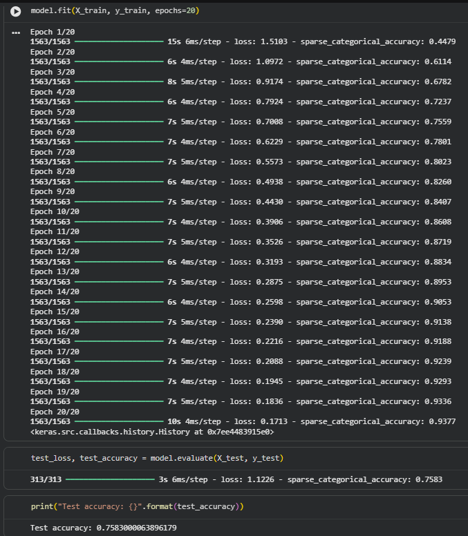

Finals - Lab Exercise 3 (CIFAR-10 Highest Accuracy)
Description: An optimization project aimed at maximizing the predictive accuracy of the previously built CIFAR-10 Convolutional Neural Network (CNN) through hyperparameter tuning and regularization.
Objectives/Purpose:
- To combat model overfitting by introducing Dropout layers.
- To fine-tune the gradient descent process by modifying the Adam optimizer's learning rate.
- To extend the training duration (epochs) to allow the network to learn deeper spatial patterns.
- To serialize and convert the final optimized model into a lightweight format (TensorFlow Lite) for potential edge deployment.
Key Features
- Dropout Regularization: Implemented a
Dropout(0.3)layer, randomly deactivating 30% of the neurons during each training pass to prevent the network from heavily relying on specific features, thereby forcing it to learn more generalized patterns. - Custom Learning Rate: Adjusted the default Adam optimizer learning rate down to
0.0005to ensure stable weight updates, preventing the optimization algorithm from overshooting the global minimum during the extended training run. - Model Serialization (TFLite): Utilized the
TFLiteConverterto transform the heavy Keras model into a highly optimized, mobile-ready.tflitefile.
Important Code Blocks
1. Implementing Dropout & Custom Optimizer
This snippet shows the architectural update where the dropout layer is added just before the final classification layer, followed by the compilation using a carefully tuned learning rate.
# Adding a dropout layer to reduce overfitting
model.add(tf.keras.layers.Dropout(0.3))
# Adding the output layer
model.add(tf.keras.layers.Dense(units=10, activation='softmax'))
# Modifying the optimizer settings for stable learning
optimizer = tf.keras.optimizers.Adam(learning_rate=0.0005)
model.compile(loss="sparse_categorical_crossentropy",
optimizer=optimizer,
metrics=["sparse_categorical_accuracy"])2. Extended Training
The training loop was extended to 20 epochs to give the model ample time to extract complex features from the 50,000 training images.
# Train the model for a longer period
model.fit(X_train, y_train, epochs=20)3. TensorFlow Lite Conversion
This block demonstrates how to convert the trained deep learning model into a lightweight artifact suitable for mobile or embedded devices.
import tensorflow as tf
# Convert and save the model
converter = tf.lite.TFLiteConverter.from_keras_model(model)
tflite_model = converter.convert()
with open('cifar_model.tflite', 'wb') as f:
f.write(tflite_model)Screenshots & Results

Execution Output & Metrics (At Epoch 20):
- Final Training Accuracy: 93.77%
- Final Training Loss: 0.1713
- Highest Test Accuracy: 75.83%
- Final Test Loss: 1.1226
Tools & Technologies
- Languages: Python 3
- Libraries/Frameworks: TensorFlow/Keras (Dropout, Adam Optimizer, TFLiteConverter), NumPy
- Platforms: Google Colab (T4 GPU Accelerator)
Challenges & Solutions
Problems Encountered: Training the model for 20 epochs allowed it to reach an impressive 93.77% training accuracy. However, evaluating the model against the test dataset yielded 75.83%. While the Dropout layer and adjusted learning rate pushed the highest test accuracy up from the previous exercise, a noticeable variance gap remains, indicating that the model still exhibits overfitting.
How I Solved Them: The introduction of Dropout(0.3) proved effective in stabilizing the network's reliance on specific pixel regions. To close the remaining gap between training and testing accuracy in the future, the next logical step would be implementing Data Augmentation (e.g., random flips, rotations, and zooms) to artificially increase the diversity of the training data.
Learning Reflection
What I Learned: I learned that raw accuracy on a training dataset is an incomplete metric, and that model evaluation must be strictly judged on unseen data. I also gained practical experience with TensorFlow Lite, bridging the gap between training a model in the cloud and preparing it for real-world deployment.
Skills Gained: Deep learning hyperparameter tuning, applying regularization techniques (Dropout) to CNNs, analyzing training vs. validation divergence, and utilizing TFLiteConverter.